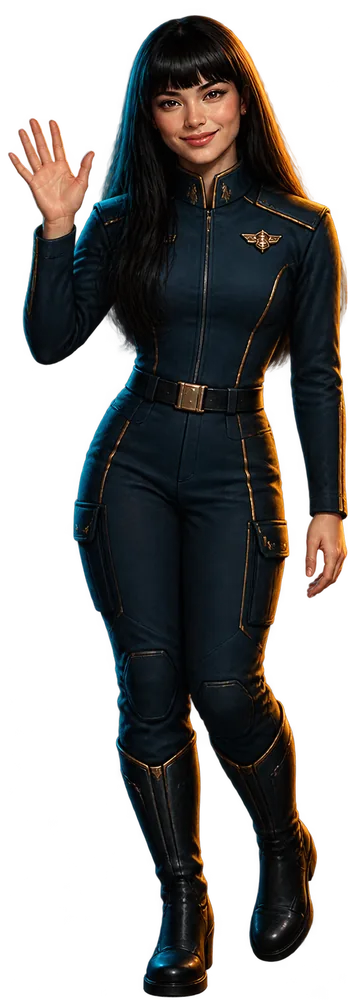

STARGATE
Una asignatura entera convertida en una misión: ocho planetas, una tripulación perdida y una Bitácora que lo vuelve a encender todo.
 Ver la demo
Ver la demoEstudiante o docente: entras con tu cuenta y el sistema te lleva a tu sitio.
Una galaxia se apaga
Al otro lado de una puerta estelar, la Estática lo va silenciando todo: un apagón que hace que la gente deje de crear, registrar y compartir. Contra ella no sirven las armas.
Sirve dejar constancia.

Cuatro voces




Ocho planetas, ocho temas
Cada tema de la asignatura es un mundo. El alumnado lo cruza como un recluta del equipo de rescate, y la nave avanza sola con el calendario: cada semana se abre algo nuevo.
 FôrgeContenido multimedia
FôrgeContenido multimedia EcosEl vídeo
EcosEl vídeo SendaraInteractivos
SendaraInteractivos ReliaeM-learning
ReliaeM-learning UmbralEvaluación
UmbralEvaluación LudoABJ
LudoABJ VínculoGamificación
VínculoGamificación LiminarRA/RV
LiminarRA/RVLa Tripulación Cero
El primer equipo que cruzó la puerta no volvió. En cada planeta espera uno de sus ocho tripulantes, y se recupera haciendo su reto: con él llegan su insignia, su carta y su fragmento de la historia.


Cada recluta tiene su Nave
- Su personaje, que evoluciona al subir de nivel.
- La orden de la semana: el capítulo, el mensaje y los retos.
- Sus retos, explicados paso a paso y con ejemplos.
- Su botín: insignias, cromos, héroes y logros de a bordo.

Lo que se hace, se registra. Lo que se registra, cuenta.
 Retos
RetosDos por tema, prácticos y con su enlace: el relámpago, en clase, recupera a un tripulante; el principal construye la Bitácora.
 Dos monedas
Dos monedasLa experiencia solo sube y marca el nivel. Los créditos se gastan. Separar progreso y moneda es una lección de gamificación en sí misma.
 Mercado Estelar
Mercado EstelarSobres de cromos, cápsulas de héroes y adornos para la ficha. Una economía entera dentro de la clase.
 El Zoco
El ZocoEl trueque entre reclutas: se cambian cartas, héroes y participaciones, con ofertas y contraofertas.
 Rankings y escuadrones
Rankings y escuadronesVarias clasificaciones, siempre por alias. Cada docente lleva su escuadrón, con su nombre y su emblema.
 El Archivo
El ArchivoLa historia completa, capítulo a capítulo. Los fragmentos de la Tripulación Cero no se ven: se ganan.
La Bitácora
El ePortfolio de cada recluta. Todo el viaje termina en ella, y cada página sigue el mismo patrón:
- La evidencia
- El contexto
- La reflexión
- La autoevaluación
«Una obra que no se documenta, no existe.»
La clase se proyecta
- Una sesión montada para cada semana: el capítulo, los retos, los rankings y lo que dijo la clase.
- Llamada a filas: se ficha desde el móvil con un botón.
- Herramientas de aula: al azar, preguntas, votaciones, premios y el cronómetro.
- El Simulador de Joran: una batalla de preguntas para repasar jugando.

El trabajo de siempre, con otra piel
Renombra y da sentido a lo que la asignatura ya pedía: las actividades, el ePortfolio y los temas.
El alumnado registra lo que hace con su enlace; los niveles, las insignias y los rankings se calculan solos.
La Nave del Comandante: empezar la clase, ver a cada recluta, premiar y seguir el grupo.
Esto lo ha montado un profesor
Sin estudio, sin productora y sin equipo: un docente, un ordenador y cuatro herramientas. Lo cuento porque la pregunta que más me hacen al enseñarlo es «¿y esto cuánto cuesta encargarlo?» — y la respuesta es que no se encargó.

Claude
Todo pasa por aquí. No es un paso más de la cadena: es la cadena.
Aquí se escribió todo lo que no es una imagen: la narrativa de los ocho planetas, quién es cada tripulante, los retos de cada tema, los mensajes semanales para el foro de la plataforma de UNIR, esta web entera, el sistema que lleva las cuentas del alumnado y el banco de pruebas que lo vigila.
Pero lo que de verdad cambia las cosas es que también dirige a las demás. El prompt de cada imagen se escribe aquí, se envía a OpenArt sin salir de la conversación, vuelve la imagen, se mira, se dice «el casco más oscuro» y sale corregida. Lo mismo con las voces. Y el código que después junta esas imágenes y ese audio en un vídeo también se escribe aquí.
Por eso no es un paso que se pueda saltar. OpenArt, Magnific y Hostinger no se hablan entre ellas: cada una habla con el centro. Una imagen no viaja sola de una a otra — vuelve a la conversación, se decide qué hacer con ella, y sale otra vez.
Con una condición que conviene decir alto: la partitura la escribe el docente. Qué se cuenta, qué se evalúa, qué se tira a la basura porque no funcionaba. La orquesta toca; no decide qué obra se interpreta.
Probar Claude ↗
OpenArt
De aquí salieron las imágenes: los ocho planetas, la Tripulación Cero, las portadas de cada tema, las 24 insignias y las 26 cartas del álbum. Con nano-banana, elegido por una razón práctica: acepta una imagen de referencia y respeta el encuadre 16:9 sin recortar por su cuenta — que es lo que hace falta cuando el plano tiene que encajar en un montaje.

Magnific
Puso las voces de los personajes y los clips de vídeo. Y algo que no se ve pero se nota: las anclas de personaje, que son las que hacen que NEBULA sea la misma en los diecisiete vídeos y no una parecida en cada plano.
Probar Magnific ↗
Hostinger
La web que estás leyendo, la Nave del Comandante (la del profesorado) y la Nave del alumnado están alojadas aquí. Es la pieza menos vistosa de las cuatro y la única sin la que nada de esto existiría: sin un sitio donde vivir, un proyecto así se queda en una carpeta del ordenador.
Probar Hostinger ↗Los botones son enlaces de afiliado, y se dice para que lo sepas. Donde la herramienta lo ofrece, quien entra por ahí se lleva un descuento o un crédito de bienvenida; y en todos los casos este proyecto recibe créditos que se reinvierten en seguir ampliando la aventura.
 Cómo se hizo, con todo el detalle →
Cómo se hizo, con todo el detalle →Embarca
Si ya estás en un grupo, entra con tu cuenta. Si solo quieres curiosear, la demo te enseña la Nave de un recluta por dentro, sin cuenta y sin que se guarde nada.